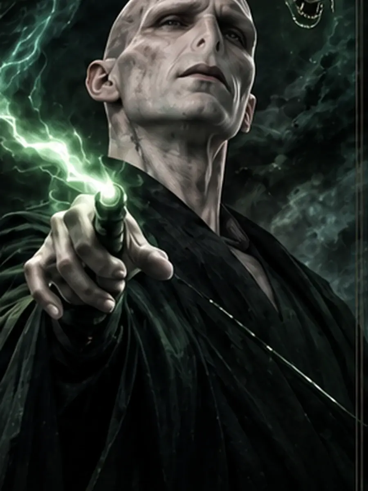
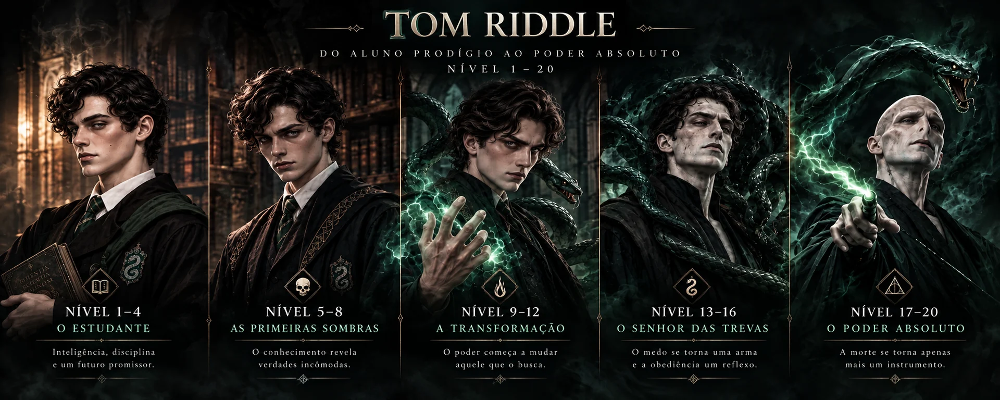
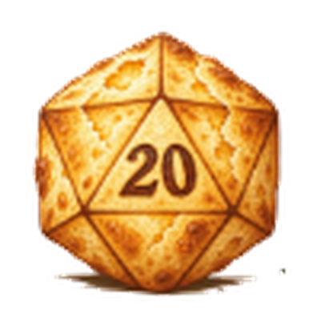

DESTAQUEVoldemort
Conhecimento, controle, servos e magia proibida em uma progressão completa.
Explorar build
Builds completas, pensadas do nível 1 ao 20, com progressão mecânica, identidade visual, estratégia de combate e equipamentos desejáveis.

Sem filtros por enquanto. Conforme o catálogo crescer, entram filtros por classe, regras, função e estilo de jogo — sem ocupar espaço agora.

DESTAQUEConhecimento, controle, servos e magia proibida em uma progressão completa.

PRÓXIMAS FORJASNovos personagens entram aqui conforme o catálogo crescer.
Depois da progressão, continue por guias, ferramentas e pela escolha da próxima personagem a entrar na Forja.